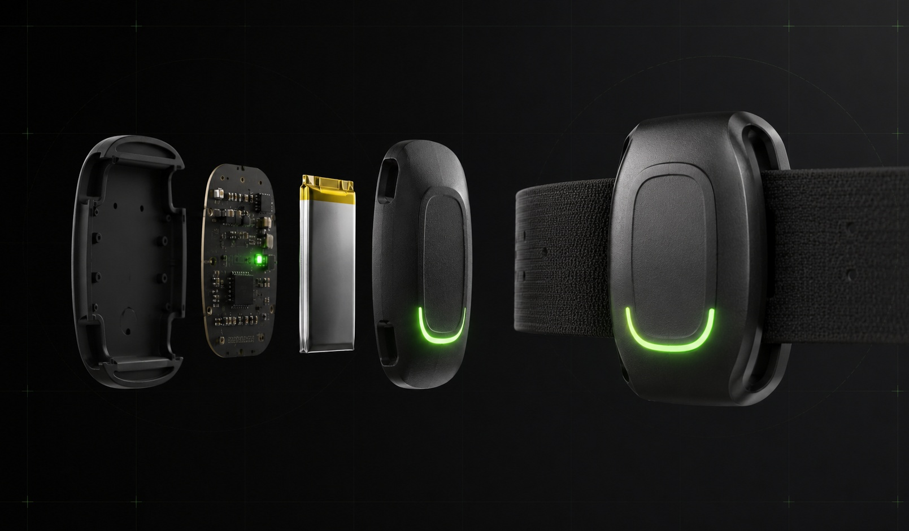
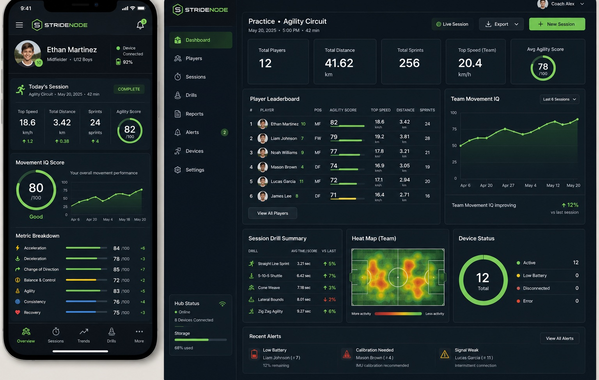

The Development Gap
Youth players are often evaluated by what is easiest to see: size, straight-line speed, goals, and game statistics.
Long-term athletic potential depends on harder-to-measure skills like movement without the ball, flexibility, balance, spatial awareness, acceleration, deceleration, and the ability to change direction under control.
The opportunity was to make movement intelligence visible in repeatable, coachable ways. Not just who is fastest, but who moves better, adapts faster, and improves over time.
The Product Concept
StrideNode turns controlled agility drills into measurable development data.
Each player wears a compact reporter. A Raspberry Pi hub manages the practice session, receives results, and hosts the coach dashboard on a private local network.
- Player reporter captures path, speed, starts, stops, and turns through GPS and IMU data.
- Practice hub manages device registration, sessions, local storage, and sync.
- Coach dashboard turns sensor streams into decisions, trends, and reports.

System Architecture
The system was designed for real practice fields where public internet may not be available. Reporters capture movement data, the Raspberry Pi hub stores and orchestrates sessions locally, and coach or parent views can sync later.
This local-first architecture supports device reliability, private data handling, and practice flow without making the coach depend on a fragile field connection.
- Wearable reporters combine XIAO Sense, GNSS, battery, and a 3D printed case.
- The private Raspberry Pi hub handles registration, storage, and session orchestration.
- Coach and family views translate movement data into progress stories.
What StrideNode Measures
The value is not GPS alone. The product combines position and motion data to describe how a player moves through space.
- Acceleration and time to usable speed.
- Deceleration and control before a cut.
- Change of direction and efficiency through turns.
- Balance, agility, consistency, and progress over repeated drills.

Coach Experience
The mobile view was designed for practice flow, not desk work. A coach needs to know who is ready, which devices are connected, whether the drill captured valid data, and what to do next.
- Set up a session by creating a practice, choosing a drill, and assigning reporters.
- Monitor readiness through battery, GPS lock, sensor status, and device connection.
- Review attempt quality, personal progress, and coaching notes immediately after a drill.
The desktop dashboard extends that view across the team, helping coaches compare readiness, leaderboard movement, performance trends, and device health.
Progress Without Pressure
The reporting layer is intentionally framed around growth, not public ranking.
Parents get a clearer view of how agility training is affecting their child's development while coaches keep context, privacy, and maturity differences in the interpretation.
- Baseline movement profile at the start of the season.
- Trend reporting across repeated drills.
- Coaching context with notes, goals, and recommended work.
- Privacy-first handling with consent, limited retention, and no public live location.